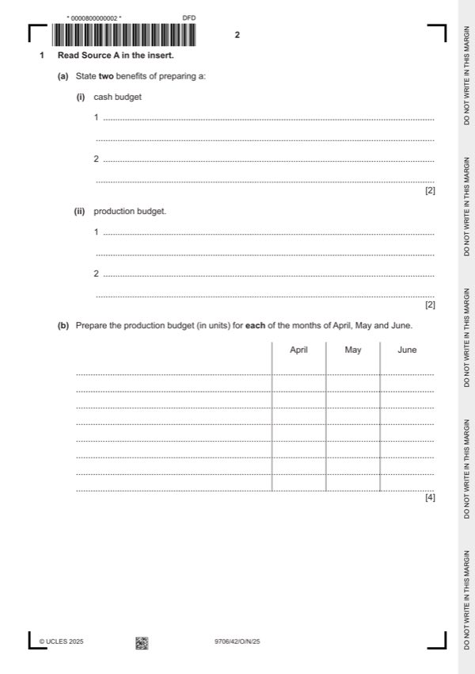

Question 1

Original paper page 2
Part 1(a)(i) — solution
State two benefits of preparing a: 2
cash budget
Ensuring that the payments are made to avoid a shortage of cash / liquidity problems. (1)
Ensuring arrangements are made for the investment of surplus funds. (1)
Max 2
Accept other valid responses.
Mark points
- Include the ideas shown in the solution above.
Part 1(a)(ii) — solution
State two benefits of preparing a: 2
production budget
Ensuring right amount of inventory to meet the customers’ demand. (1)
Ensuring resources are available to meet the production target. (1)
Max 2
Accept other valid responses.
Mark points
- Include the ideas shown in the solution above.
Part 1(b) — solution
Answer: 4
4
Prepare the production budget (in units) for each of the months of April, May and June.
April May June
Sales of next month (units) 3 100 3 000 2 800 (1) row
Opening inventory (units) (160) (155) (150) (1) row
Closing inventory (units) 155 150 140 (1) row
Production (units) 3 095 2 995 2 790 (1)OF row
University Press & Assessment 2025 Page 8 of 13
9706/42 Cambridge International AS & A Level – Mark Scheme October/November 2025
Mark points
- Correct result: 4
Part 1(c) — solution
- W1 3200 + 160 – 125 = 3 235 units
Mark points
- W1 3200 + 160 – 125 = 3 235 units
Part 1(d) — solution
Prepare the cash budget for each of the months of April, May and June. 6
April May June
$ $ $
Receipts
February sales 156 000
March sales 48 500 150 000
April sales 62 080 192 000
May sales 63 147
204 500 (1) 212 080 (1) 255 147 (1)
Payments
Suppliers 77 640 74 280 70 280 OF
Direct wages and variable overheads 61 900 59 900 55 800 (1)OF row
Fixed overheads 52 000 55640 55640 (1) row
Promotion cost 20 000
211 540 189 820 181 720
Net cash increase/(decrease) (7 040) 22 260 73 427
Opening balance 38 000 30 960 53 220
Closing balance 30 960 53 220 126 647 (1)OF row
University Press & Assessment 2025 Page 10 of 13
9706/42 Cambridge International AS & A Level – Mark Scheme October/November 2025
Mark points
- Include the ideas shown in the solution above.
Part 1(e) — solution
Advise the directors which option they should choose. Justify your answer. 7
Option 1 (Max 3)
Existing product may be coming to the end of its product life cycle. (1)
Developing a new product is important for the future of the business. (1)
Further costs may be incurred on development / promotion of new product. (1)
Research and development may fail / it is risky. (1)
Option 2 (Max 3)
It has less risk (1)
Interest income increases the profit or cash / return from the interest income is too low (1)
Cash can be used for other investments to generate a higher return (1)
Cash is not available for long-term investment / emergency use in the business (1)
Decision supported with a comment (1)
Accept other valid responses.
Mark points
- Include the ideas shown in the solution above.